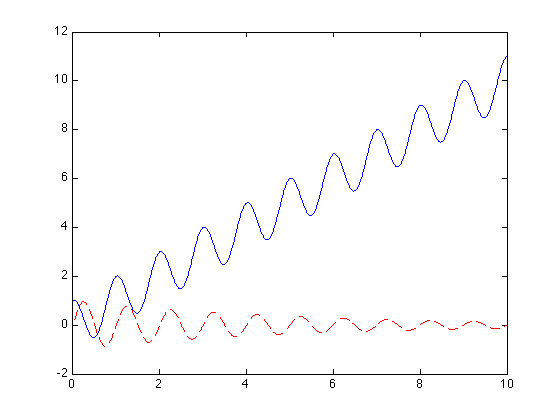
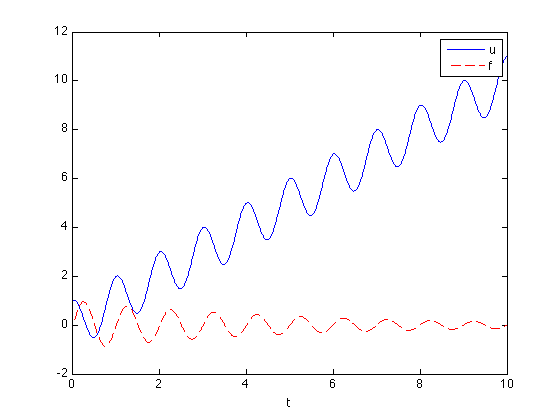

Visualizing Data
Contents
Before you make any plot, remember to issue a "clear figure" command to erase whatever on the figure already:
clf;
Plotting sequential functions
Visualization allows us to put the data in terms that are more easily understandable to our senses. Assuming you are now familiar with generating an array of numbers:
t=[0:0.01:10];
We can now calculate a function f(t), for example:
f=sin(2*pi*t)./exp(t/5);
Note that pi is a MATLAB function that returns the number ¹.
To see how f(t) looks like, we can use the MATLAB function plot, which produces a plot of the second parameter against the first, or if only one parameter is given it will plot it against the index number.
plot(t,f)

Plotting discrete data
The default setting of plot is continuous solid line. However, sometimes the data is not sequential, and we may want to show each data point individually. The data set v is an example of this case:
u=1:50; v=rand(1,length(u));
To see how the data distributes, we can add line specification in plot:
plot(u, v, 'o');

Here, o is the marker specifier for "circle". Other options are + (plus sign), s (square), d (diamond), etc.
Overplotting
If we want to compare two functions:
f=sin(2*pi*t)./exp(t/5); u=t+cos(2*pi*t);
Usually new plots erase the old plots. To change that behavior, issue hold on. To return to the old behavior, issue hold off.
clf plot(t,u) hold on plot(t,f,'r--')
this will overplot f on u using a red dashed line. This is defined by the string 'r--'; r stands for red, -- means dashed line. Type help plot in the command line for more options.
Documenting plots
You can annotate a plot using xlabel() and ylabel(). Another very handy command to annotate plots of this type is legend.
xlabel('t'); legend('u','f');
You can use help legend to see more options of the command.